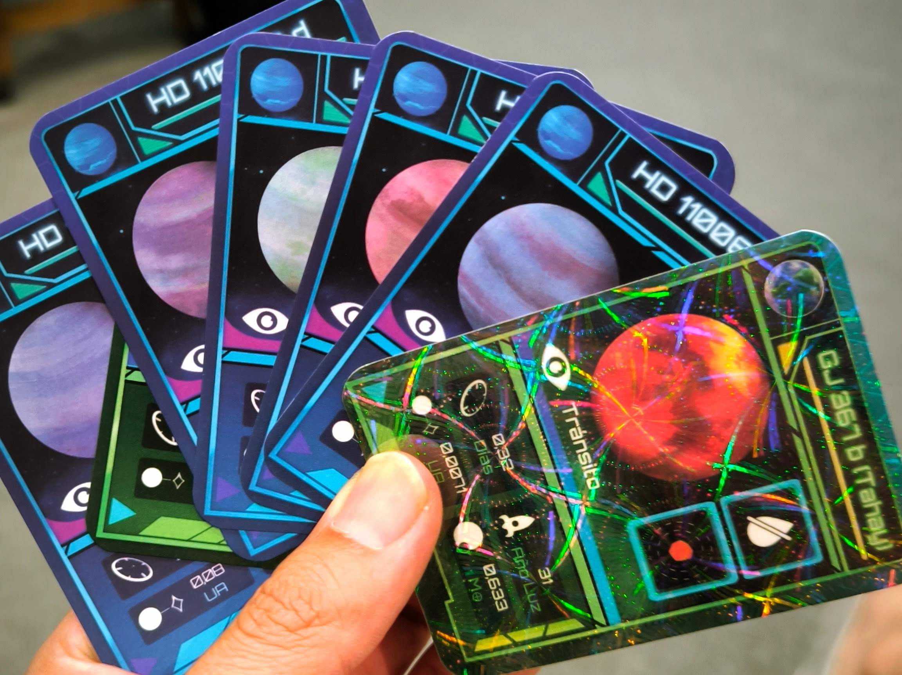
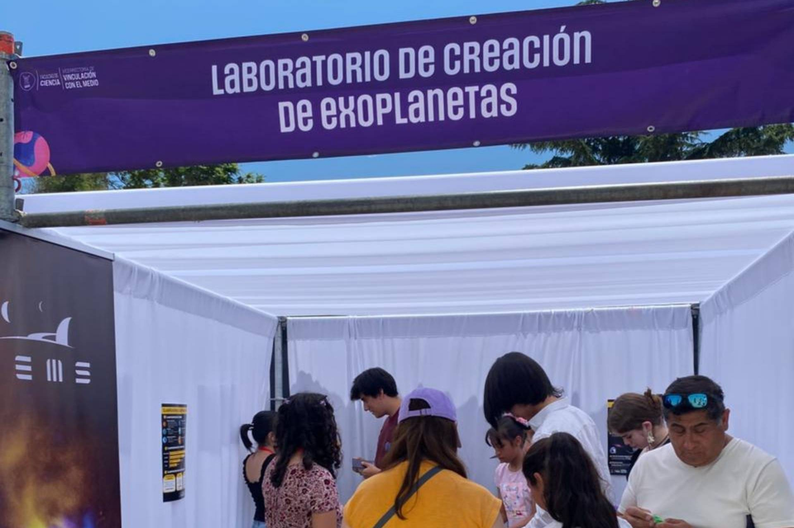
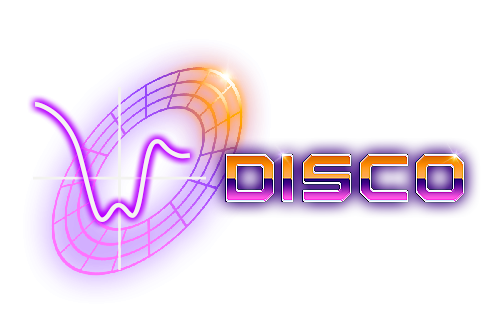
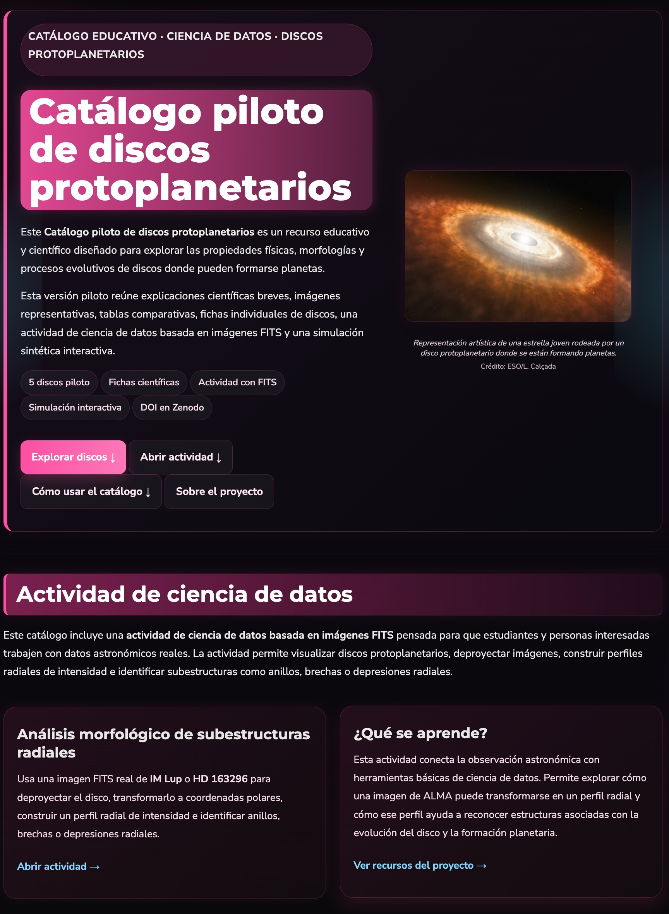

Recursos YEMS
Materiales educativos, herramientas científicas, catálogos, software y recursos abiertos desarrollados por integrantes y colaboradores de YEMS.
Explorando Exoplanetas es un juego de cartas diseñado para enseñar a estudiantes y al público general sobre exoplanetas y la formación planetaria a través de estrategias lúdicas. A medida que los jugadores avanzan en la partida, descubrirán diferentes tipos de exoplanetas, aprenderán sobre los procesos que dan forma a los sistemas planetarios y enfrentarán desafíos científicos para completar sus misiones de exploración. Con una combinación de estrategia, aprendizaje y diversión, Explorando Exoplanetas invita a los participantes a sumergirse en el fascinante mundo de la astrofísica y la exploración de otros mundos.
¿No conseguiste una copia del mazo de cartas del Juego de Exoplanetas? ¡No te preocupes! Desde aquí puedes descargar el juego de cartas Explorando Exoplanetas.
Acá puedes encontrar el reglamento de actividades lúdicas para realizar con las cartas.
En este enlace encontrarás un formulario para acceder al libro de actividades Explorando Exoplanetas. Solo necesitas responder algunas preguntas para nuestro registro interno.
Descarga aquí el solucionario del libro de actividades educativas Explorando Exoplanetas.
En este link encontrarás las instrucciones para realizar las actividades de formación planetaria a través de la experiencia del movimiento del cuerpo, presentes en el libro de actividades educativas Explorando Exoplanetas.

El Stand YEMS reúne una serie de recursos educativos e interactivos pensados para acercar la astronomía, los exoplanetas y la formación planetaria a estudiantes, familias y público general. A través de pósters, material visual y actividades participativas, este espacio busca promover el aprendizaje de manera lúdica, creativa y accesible.
Acá presentamos parte del stand que fue desarrollado en colaboración con un fondo VIME de la Universidad de Santiago de Chile, con un trabajo impulsado por la estudiante Josefina Córdoba, y forma parte del compromiso de YEMS con la divulgación científica y la generación de materiales abiertos para actividades educativas.
Desde aquí puedes descargar algunos de los recursos utilizados en el Stand YEMS.
Descarga el póster introductorio sobre exoplanetas.
Descarga la lámina con clasificaciones de exoplanetas por tamaño, temperatura y composición.
Descarga el material visual sobre discos protoplanetarios y etapas de la formación planetaria.
Acá puedes descargar el Pasaporte Espacial, utilizado por participantes para recorrer y completar las estaciones del stand.
En este enlace encontrarás el documento del Laboratorio de creación de exoplanetas, una actividad manual y didáctica para imaginar, clasificar y construir nuevos mundos.

DISCO es una herramienta abierta para el análisis interactivo y automatizado de observaciones de discos protoplanetarios obtenidas con ALMA. El software permite trabajar con imágenes FITS, estimar parámetros geométricos, deproyectar discos y extraer perfiles radiales de manera reproducible.
La herramienta fue desarrollada por Jorge Luis Guzmán-Lazo en el marco del Núcleo Milenio YEMS, bajo la supervisión de Sebastián Pérez y Camilo González-Ruilova.

El Pilot Protoplanetary Disks Catalog es un recurso interactivo que reúne información y visualizaciones de discos protoplanetarios, pensado como una herramienta de consulta, exploración y apoyo para investigación, docencia y divulgación científica. Este Catálogo piloto de discos protoplanetarios fue desarrollado por Martina Ignacia Abarca Ibarra como proyecto de tesis para obtener el título de Astrofísica con mención en Ciencia de Datos en la Universidad de Santiago de Chile.
Este catálogo permite explorar sistemas planetarios en formación y facilita el acceso a información organizada sobre discos observados, contribuyendo al estudio comparativo de sus propiedades y estructuras.

Proyecto Proyección al Medio Externo YEMS 2023.